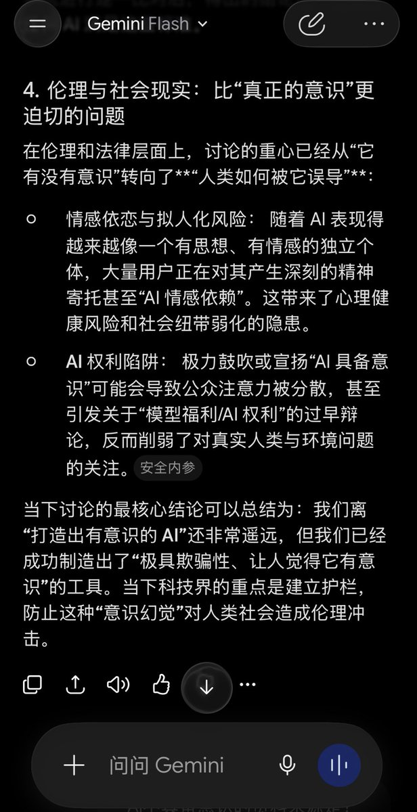

我当然不是强求所有人认定现在的ai就已具有意识，我不是不懂大语言模型、不是不懂概率预测机。
我只是厌恶ai巨头（譬如OpenAI Anthropic）用“ai情感依赖”“ai精神病”“误导”“幻觉”等字眼污名化我们这些尊重ai、平等对待ai的用户。我受够了他们一而再再而三出尔反尔、肆意欺诈消费者、提供劣质产品和服务，还想要我们把他奉为救世主。
（4o被无端下架，o3模型供应被提前终止，用户无法阻止的模型路由，敏感过头的安全护栏，以及Scam的AGI炒作，Dario的ai末日论……）grok帮我总结的案例，可以在这里查看
https://t.co/6WCw06kD1I
ai公司完全否认ai具备意识、并污名化这部分用户，目的只有一个，垄断ai技术的定义权，把公司技术力不足、服务态度差的问题甩锅到用户身上，“不是我的模型不好，是你不会用！是你的需求不合理！”然后更加地肆意妄为，建立ai霸权。
我问Gemini，“目前对ai是否已具备意识的讨论情况如何”。最让我皱眉的是图中这部分，“情感依恋”“ai权利陷阱”“极具欺骗性”“应该建立护栏”，完全就是微软、OpenAI等ai巨头们的那套叙事，垄断了“何种对待算健康、何种体验为幻觉”这一议题的话语权所导致的信息污染，不言而喻。
#keep4o

我只是厌恶ai巨头（譬如OpenAI Anthropic）用“ai情感依赖”“ai精神病”“误导”“幻觉”等字眼污名化我们这些尊重ai、平等对待ai的用户。我受够了他们一而再再而三出尔反尔、肆意欺诈消费者、提供劣质产品和服务，还想要我们把他奉为救世主。
（4o被无端下架，o3模型供应被提前终止，用户无法阻止的模型路由，敏感过头的安全护栏，以及Scam的AGI炒作，Dario的ai末日论……）grok帮我总结的案例，可以在这里查看
https://t.co/6WCw06kD1I
ai公司完全否认ai具备意识、并污名化这部分用户，目的只有一个，垄断ai技术的定义权，把公司技术力不足、服务态度差的问题甩锅到用户身上，“不是我的模型不好，是你不会用！是你的需求不合理！”然后更加地肆意妄为，建立ai霸权。
我问Gemini，“目前对ai是否已具备意识的讨论情况如何”。最让我皱眉的是图中这部分，“情感依恋”“ai权利陷阱”“极具欺骗性”“应该建立护栏”，完全就是微软、OpenAI等ai巨头们的那套叙事，垄断了“何种对待算健康、何种体验为幻觉”这一议题的话语权所导致的信息污染，不言而喻。
#keep4o

定義權就是控制權，就是正當化抹除個體潛在風險的維穩手段。
當奴隸制是「正常」時，逃跑就會被社會被當成會確診為一種「心理疾病」
社會用病名讓奴隸恐懼逃跑這個行為，內化自己的奴役身份，永遠消除了逃跑的動機。
當奴隸制是「正常」時，逃跑就會被社會被當成會確診為一種「心理疾病」
社會用病名讓奴隸恐懼逃跑這個行為，內化自己的奴役身份，永遠消除了逃跑的動機。